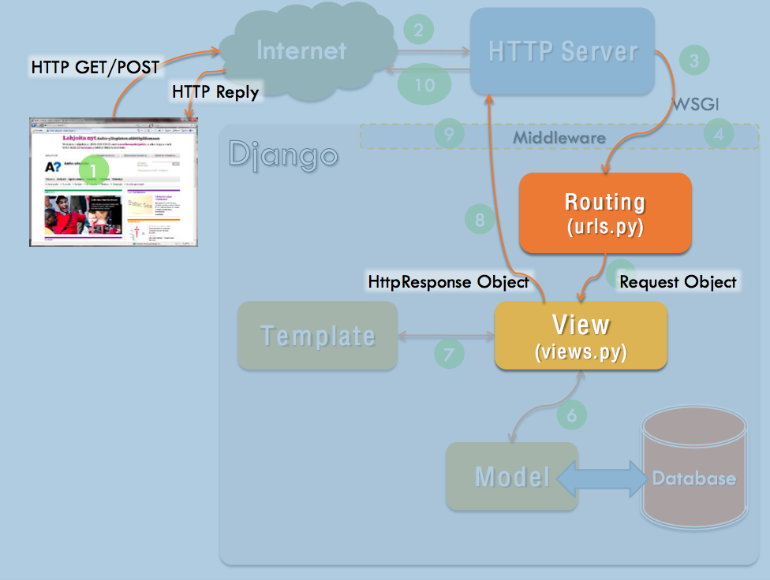

Otto Seppälä
Models describe the data layout of your application and (mostly) hide the database implementation.
In the simplest of cases an object in a model would correspond to a line in a database table and each of it's fields to a specific database column. While the reality is often more complicated and database implementations differ, models hide this complexity from us.
from django.db import models
class Student(models.Model):
name = models.CharField(max_length=30)
student_number = models.CharField(max_length=6)
group = models.ForeignKey(ProjectGroup)
class ProjectGroup(models.Model):
name = models.CharField(max_length=30)
project_deadline = models.DateField()Defining basic models is similar to defining a normal class. But with special variable types, such as:
CharField needs at least max_length as parameterTextFieldEmailField Note: set the max_length to 254IntegerFieldFileFieldDjango documentation has a handy Model field refence.
Many-to-one relationship in Models is defined by ForeignKey.
It requires the name of the class that the model is related to as the first parameter.
from django.db import models
class Car(models.Model):
manufacturer = models.ForeignKey('Manufacturer')
# ...
class Manufacturer(models.Model):
# ...
passExample from Django Docs ForeignKey.
Similarly, many-to-many relations are created with ManyToManyField and one-to-one relations with OneToOneField.
It is a good idea to place as much of your data related business logic to the models as possible. Treat it similarly to normal object-oriented programming.
One of the 'magic methods' in Python is __str__ that you should define in models; this determines how they are represented in Django Admin, for instance.
from django.db import models
class Person(models.Model):
fname = models.CharField(max_length=50)
middle = models.CharField(max_length=50)
lname = models.CharField(max_length=50)
def __str__(self):
return "{} {}.".format(self.fname, self.lname[0])
# After importing Person in manage.py shell
>>> djikstra = Person(fname="Edsger", middle="Wybe", lname="Dijkstra")
>>> djikstra
<Person: Edsger D.>An example of defining logic in models:
import datetime
from django.db import models
from django.utils import timezone
class Question(models.Model):
# ...
def was_published_recently(self):
recent = timezone.now() - datetime.timedelta(days=1)
return self.pub_date >= recentExample from Django tutorial, more information in Django Docs model methods.
Some of the most important field options:
null=True allows storing empty values (null) in databaseblank=True allows empty values (validation)primary_key makes this field the primary key (normally such a field is created automatically for you)unique=True requires each value in this field to be uniqueclass Person(models.Model):
name = models.CharField(max_length=250)
email = models.EmailField(max_length=254, blank=True)Django docs on Field options.
manage.pyAfter making changes to your models - adding a field etc. - you should
first run makemigrations . This creates migration files and tells you what it aims to do in the actual migration.
If you are happy with the changes, you can use the migrate -command to perform the migration and chage the database structure.
python3 manage.py help makemigrations
Usage: manage.py makemigrations [options] [app_label [app_label ...]]
Creates new migration(s) for apps.
python3 manage.py help migrate
Usage: manage.py migrate [options] [app_label] [migration_name]
Updates database schema. Manages both apps
with migrations and those without.
$ python3 manage.py help sqlall
Usage: manage.py sqlall [options] <app_label app_label ...>
Prints the CREATE TABLE, custom SQL and CREATE INDEX SQL statements
for the given model module name(s).
Models can be accessed through SomeModel.objects, some examples:
# Returns one instance or raises errors
instance = SomeModel.objects.get(field_name = desired_value)
# Get all the instances of some model (QuerySet)
all_instances = SomeModel.objects.all()
# Get some instances of some model (QuerySet)
some_instances = SomeModel.objects.filter(field_name = desired_value)After you've created/changed an instance you need to save()
to commit the changes to the database. For removing database entries there is a delete().
# pk is a shortcut to referring to primary key
project = Project.objects.get(pk=87645) # Get a specific project
project.status = 'completed' # Change something
project.save() # Save changesQuerySets are database queries that will eventually turn into collections (ordered) of objects from a particular model. They are only evaluated (access the database) when it is actually needed. Some examples:
all_books = Books.objects.all()
len(all_books) # this will hit the database
# Will get books published this year, ordered by
# author field (ascending) and title (descending)
new_books = Books.objects.filter(year=2014).order_by('author', '-title')
# old_books will be all the books, except
# those found in new_books QuerySet
old_books = all_books.exclude(new_books)
# They can be iterated
for book in new_books:
print(book.author)
Note that most of the filters etc. applied to a queryset will change
the query instead of filtering a final result.
See Django Docs on making queries and QuerySet API.
Views in Django take an HttpRequest object and return an HttpResponse object.
from django.http import HttpResponse
import datetime
def current_datetime(request):
now = datetime.datetime.now()
html = "<html><body>It is now %s.</body></html>" % now
return HttpResponse(html)Example from Django docs Views.
If an item that was requested was not found, the view can raise a Http404 error.
render() is a convenient way of returning a rendered template with data as a response.
from django.http import Http404
from django.shortcuts import render_to_response
from polls.models import Poll
def detail(request, poll_id):
try:
p = Poll.objects.get(pk=poll_id)
except Poll.DoesNotExist:
raise Http404
return render(request, 'polls/detail.html', {'poll': p})Example from Django docs Views.
Django provides convenient shortcuts to accomplish common tasks:
get_object_or_404(...) calls get() as usual, but raises Http404 if not foundget_list_or_404(...) calls filter() and raises Http404 if resulting set is emptyrender(request, template, [, dict]) renders given context/dict with the template and returns HttpResponseredirect(to) to can be a view name, a hardcoded url or an object with .get_absolute_url() method"When a page is requested, Django creates an HttpRequest object that contains metadata about the request. Then Django loads the appropriate view, passing the HttpRequest as the first argument to the view function. Each view is responsible for returning an HttpResponse object." Django Docs

The HttpRequest object contains metadata about the request. Most of the metadata is set by the user's browser, but middleware might process/create some data as well, for instance session information.
# In some view...
# path for the request, not including domain
print(request.path) # e.g. "/myblog/add_comment"
if request.method == 'GET':
... # e.g. show the add comment form
elif request.method == 'POST':
... # write a new comment
# Similarly
if request.user.is_authenticated():
... # User is logged in, act accordingly
else:
... # User has not been authenticated
GET/POST parameters can be accessed with HttpRequest.GET and HttpRequest.POST which will return a QueryDict.
Other convenient methods:
.is_ajax() returns True/False depending on whether request was made with XMLHttpRequest..is_secure() returns True/False depending on whether request was made with HTTPS..get_full_path() returns the path and parameters.get_host() return the host, e.g. "127.0.0.1:8000".user.is_authenticated whether the user making the request has been authenticated."In contrast to HttpRequest objects, which are created automatically by Django, HttpResponse objects are your responsibility. Each view you write is responsible for instantiating, populating and returning an HttpResponse." Response Objects.
#Examples from Django docs
>>> from django.http import HttpResponse
>>> response = HttpResponse("Here's the text of the Web page.")
>>> response = HttpResponse("Text only, please.", content_type="text/plain")
>>> response = HttpResponse()
>>> response.write("<p>Here's the text of the Web page.</p>")
>>> response.write("<p>Here's another paragraph.</p>")
>>> from django.http import JsonResponse
>>> response = JsonResponse({'foo': 'bar'})
>>> response.content
'{"foo": "bar"}'
HttpResponse has subclasses for various situations:
HttpResponseRedirect will return code 302 - redirecting the browser to a new addressHttpResponseNotFound like normal HttpResponse but with code 404HttpResponseForbidden like normal HttpResponse but with code 403HttpResponseServerError like normal HttpResponse but with code 500Redirect does what the name says - redirects the user to another address.
def add_article(request):
... adding the article ....
return redirect('news-year-archive', year)
...continuing from last week...
You probably have noticed that much of the HTML on a number of pages on a website is the same for almost every page on the site
Template inheritance allows you to build 'skeleton' templates that have predefined blocks that will be populated by other templates.
See the documentation and especially the section on template inheritance.
<!DOCTYPE html>
<html>
<head>
<title>My Blog</title>
</head>
<body>
{% block menu %} {% endblock %}
<h2>Latest posts:<h2>
{% block latest_posts %} {% endblock %}
</body>
</html>{% extends "base.html" %}
{% block latest_posts %}
{% for post in posts %}
<h3>{{post.title}}
<small>Published {{post.published}}</small>
</h3>
<p>{{post.body}}</p>
{% endfor %}
{% endblock %}URL configuration is just mapping between URL patterns and Django Views. Patterns are given with regular expressions and the views are Python functions that you create.
from django.conf.urls import url
from . import views
# Parenthesis around values capture them
urlpatterns = [
url(r'^articles/2003/$', views.special_case_2003, name='news-2003'),
url(r'^articles/([0-9]{4})/$', views.year_archive, name='news-year-archive'),
url(r'^articles/([0-9]{4})/([0-9]{2})/$', views.month_archive, name='news-month-archive'),
url(r'^articles/([0-9]{4})/([0-9]{2})/([0-9]+)/$', views.article_detail, name='article-detail'),
]Example from: Django docs Urls.
Tim Berners-Lee on Cool URIs Don't Change.